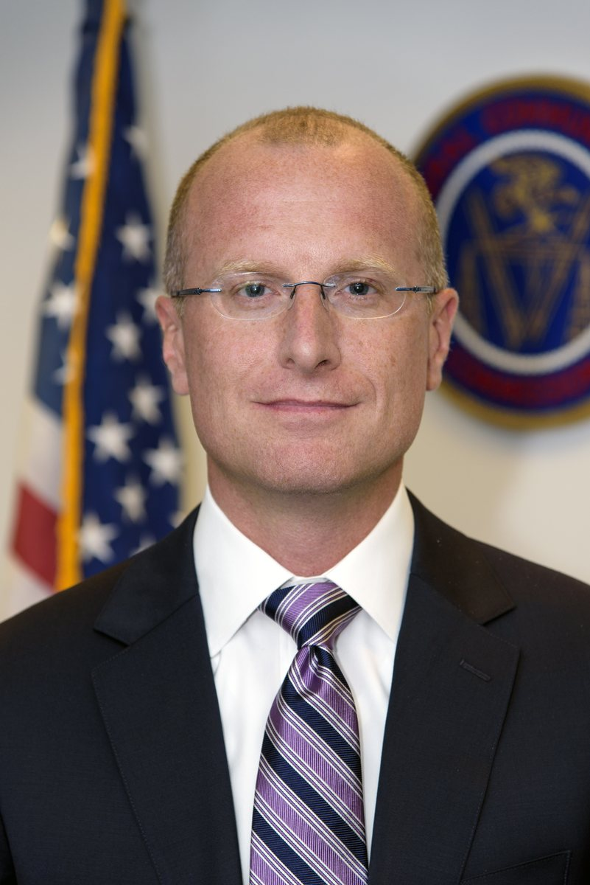
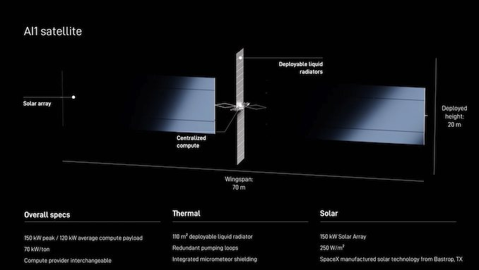
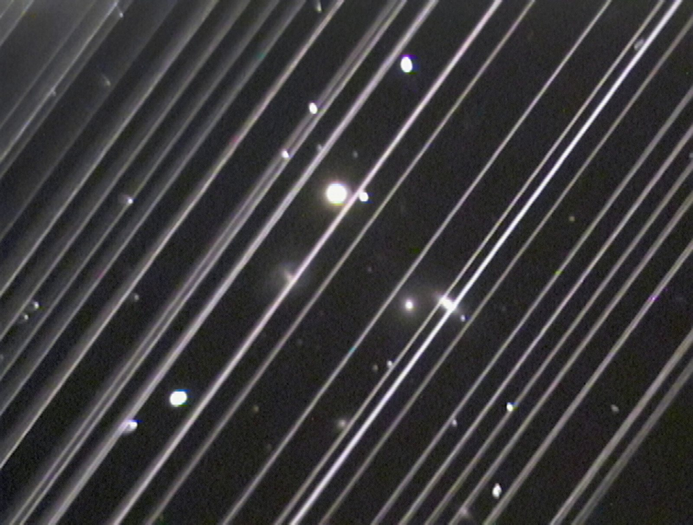

Mercoledì 25 novembre 2026, alla vigilia del Thanksgiving americano, la Federal Communications Commission ha firmato l’autorizzazione più grande mai concessa a un singolo progetto spaziale: SpaceX potrà costruire, lanciare e far funzionare una costellazione di fino a un milione di satelliti Starmind, pensati non per portare internet ma per fare calcolo. Sono centri dati in orbita, alimentati dal Sole, destinati ad addestrare e far girare modelli di intelligenza artificiale. Per dare un ordine di grandezza: oggi Starlink, la più grande costellazione della storia, conta circa 11.200 satelliti in orbita. Starmind, se completata, moltiplicherebbe di circa cinquanta volte il numero totale dei satelliti attorno alla Terra.
Che cosa ha deciso la FCC
L’atto porta la sigla DA 26-1273 ed è firmato da Courtney Reinhard, capo dello Space Bureau, l’ufficio della Commissione che si occupa di satelliti. La formula è tecnica ma importante: domanda accolta in parte, rinviata in parte, con condizioni. SpaceX aveva depositato la richiesta il 30 gennaio 2026 per il «SpaceX Orbital Data Center System», nome commerciale Starmind; la Commissione l’aveva messa a pubblico avviso il 4 febbraio. Da allora sono arrivati circa 1.500 commenti del pubblico e le opposizioni formali di Amazon Leo, Viasat e dell’American Astronomical Society. Tutte e tre le istanze di rigetto sono state respinte.
Nel comunicato che accompagna l’ordine la FCC parla della prima autorizzazione nella storia degli Stati Uniti per una costellazione di centri dati nello spazio, descrive i satelliti come «moduli di calcolo orbitali» capaci di elaborare enormi quantità di dati da usare a terra e si spinge fino a evocare una civiltà di tipo Kardashev II, cioè capace di sfruttare tutta l’energia della propria stella. Il presidente Brendan Carr ha scritto che l’America sta guidando il mondo nell’era della superintelligenza e che la decisione «apre una nuova, audace frontiera per l’infrastruttura di calcolo». Poche ore dopo Elon Musk ha risposto su X ringraziando Carr: «Molto apprezzato. Sarà una grande risorsa per l’America e per il mondo».
La Commissione ha anche fatto sapere di avere sul tavolo altre proposte di centri dati orbitali, che intende esaminare rapidamente. Starmind è la prima a passare, non l’unica in coda.

Le scadenze: quattordici anni di pista
Il calendario imposto dall’ordine è lungo, e proprio per questo rivelatore. SpaceX deve mettere in orbita e far funzionare almeno un satellite Starmind entro il 25 novembre 2033. Entro il 25 novembre 2035 deve averne operativo il 10%, cioè centomila. Entro il 25 novembre 2038 la metà, cinquecentomila. Entro il 25 novembre 2040 il resto della costellazione. Sono le nuove tappe di dispiegamento introdotte dalla FCC con la riforma delle regole spaziali di quest’anno, che SpaceX ha chiesto di applicare dopo aver ritirato una prima richiesta di esenzione totale dalle scadenze.
La Commissione ha poi concesso due esenzioni pesanti: SpaceX non dovrà depositare la garanzia fideiussoria normalmente richiesta agli operatori di costellazioni e non dovrà passare per un «processing round», la procedura che di solito mette in fila e coordina le domande concorrenti sulle stesse frequenze. L’argomento è che Starmind usa la radio solo come riserva, in condizioni non protette, e quindi non toglie spazio a nessuno.
Il calendario di Musk è molto più aggressivo di quello dell’ordine. In un incontro organizzato da Baron Capital ha detto di aspettarsi il primo lancio di satelliti Starmind nel terzo trimestre del 2027: «Partiremo piano, poi si salirà a volumi significativi probabilmente nel ’28 e a volumi molto grandi nel ’29». Le scadenze FCC sono il limite massimo, non la previsione aziendale.
| Data | Fase | Che cosa succede |
|---|---|---|
| 30 gennaio 2026 | Domanda | SpaceX deposita alla FCC la richiesta per un milione di centri dati orbitali |
| 4 febbraio 2026 | Pubblico avviso | La FCC accetta la domanda; partono commenti e opposizioni |
| 6 marzo 2026 | Opposizioni | Amazon Leo, Viasat e American Astronomical Society chiedono il rigetto |
| 25 novembre 2026 | Autorizzazione | Ordine DA 26-1273: via libera con condizioni, opposizioni respinte |
| 3° trimestre 2027 | Previsione Musk | Primi lanci di satelliti Starmind |
| 25 novembre 2033 | Scadenza FCC | Almeno un satellite in orbita e operativo |
| 25 novembre 2035 | Scadenza FCC | 10% della costellazione, centomila satelliti |
| 25 novembre 2038 | Scadenza FCC | 50% della costellazione |
| 25 novembre 2040 | Scadenza FCC | Costellazione completa |
Come è fatto un satellite Starmind
Starmind non è uno Starlink più grande. È un altro oggetto. L’ordine colloca il milione di satelliti in gusci orbitali spessi 50 chilometri, fra 500 e 1.002 chilometri di quota, su sei fasce nominali: tre con inclinazione intorno ai 30 gradi e tre su orbite eliosincrone, quelle che restano sempre nella stessa relazione con il Sole e quindi offrono luce quasi continua ai pannelli. I satelliti parlano fra loro e con il resto della rete tramite collegamenti ottici, cioè laser. Le frequenze radio in banda Ka, fra 18,8 e 19,3 GHz verso terra e fra 28,6 e 29,1 GHz verso lo spazio, sono autorizzate solo per telemetria, tracciamento e comando di emergenza, nel caso in cui i laser si guastino.
La scheda tecnica diffusa da SpaceX per il modello AI1 indica un carico di calcolo da 150 kilowatt di picco e 120 di media, 70 kilowatt per tonnellata, un pannello solare da 150 kilowatt e 110 metri quadrati di radiatori a liquido dispiegabili per smaltire il calore, con circuiti di pompaggio ridondanti e schermatura contro i micrometeoriti. L’apertura alare è di 70 metri, l’altezza a pannelli aperti di 20; la pagina web del progetto riporta misure ancora più grandi, 75 per 30 metri, segno di un progetto in evoluzione. Le celle solari arrivano dallo stabilimento SpaceX di Bastrop, in Texas, dove l’azienda dice che costruirà anche i satelliti, in collaborazione con Nvidia.

Il senso del progetto lo ha spiegato a ottobre, al Congresso astronautico internazionale, Michael Nicholls, vicepresidente di SpaceX per Starlink e intelligenza artificiale. Ogni satellite potrebbe valere circa 250 kilowatt, «più o meno un rack di calcolo nello spazio», paragonabile a un sistema Nvidia NVL72. Ma il lavoro vero lo faranno gruppi di una decina di satelliti in formazione stretta, collegati fra loro da circa 10 terabit al secondo e poi alla costellazione e a Starlink. Volare in sciame, a distanza ravvicinata, per centinaia di migliaia di unità: è un modo di operare che nessuno ha mai provato.
A portarli in orbita sarà Starship, come già succede con gli Starlink V3: il razzo ha appena completato il suo secondo volo orbitale e finora ha rilasciato 52 satelliti V3. Un milione di satelliti significa un ritmo di lanci che oggi non esiste da nessuna parte.
Detriti e fine vita: il punto rinviato
La parte che la FCC non ha concesso è forse la più interessante. SpaceX aveva chiesto di poter smaltire i satelliti che operano sopra i 600 chilometri non bruciandoli nell’atmosfera, come prevedono le regole per tutto ciò che finisce la missione sotto i 2.000 chilometri, ma spostandoli in orbite di parcheggio attorno alla Terra o addirittura in orbita attorno al Sole. La Commissione ha rinviato la decisione: le informazioni fornite non bastano per capire se questi metodi rispettino le norme. Prima di lanciare qualunque Starmind sopra i 600 chilometri, o qualunque satellite non destinato al rientro, SpaceX dovrà presentare un piano definitivo e una domanda di modifica.
Per i satelliti più bassi il piano antidetriti è stato invece giudicato conforme. SpaceX promette di rilasciarli a quote basse per collaudarli prima di alzarli, di usare la propulsione di bordo per salire, mantenere la posizione, schivare collisioni e andare allo smaltimento, di guidarli a rientrare sopra l’oceano e di progettarli in modo che si disintegrino completamente. In cambio dovrà consegnare due relazioni l’anno, a gennaio e a luglio, con il numero di incontri ravvicinati, di manovre, di satelliti ritirati, rientrati e in orbita.

Astronomi e ambiente fuori dal perimetro
Una mezza dozzina di organizzazioni, fra cui la Secure World Foundation e l’American Astronomical Society, aveva sollevato il rischio di collisioni, la crescita dei detriti, l’inquinamento atmosferico dei rientri e l’impatto sul cielo notturno. La FCC ha risposto che molte di queste questioni non sono di sua competenza: le emissioni dei lanci spettano alla FAA, gli effetti dei rientri sull’atmosfera, come gli ossidi di alluminio e il possibile danno all’ozono, sono stati definiti «speculativi e non supportati» dagli atti. Soprattutto, la Commissione ha applicato la svolta decisa a inizio ottobre: le attività nello spazio avvengono fuori dal territorio americano e quindi non richiedono la valutazione ambientale prevista dal National Environmental Policy Act. Nessuno studio d’impatto complessivo, dunque, per la costellazione più grande mai approvata.
Sull’astronomia ottica la FCC considera sufficienti le misure già presentate da SpaceX. L’American Astronomical Society si è detta «scoraggiata e sgomenta», teme per il futuro della ricerca finanziata con fondi pubblici sotto un cielo «radicalmente alterato» e lamenta l’assenza di obblighi formali di coordinamento nella licenza, pur sperando che SpaceX continui a collaborare con la National Science Foundation. La Commissione, dal canto suo, ha scritto chiaramente che molti commenti chiedevano al governo di sostituirsi alle imprese nel giudicare se i centri dati orbitali convengano, e che non intende farlo.
Perché adesso: la corsa al calcolo
La decisione arriva nello stesso giorno in cui SpaceX ha rilanciato su X il progetto Colossus 3, il campus di supercalcolo nella contea di Cochise, in Arizona: niente centrale a gas, nessun uso industriale di acqua, raffreddamento a secco a circuito chiuso, oltre 50 miliardi di dollari di investimento, mille posti di lavoro permanenti e fino a 5.500 nei cantieri. Musk ha commentato che Colossus 3 porterà grandi benefici alla comunità dell’Arizona. Terra e orbita non sono alternative, per SpaceX: sono due fasi della stessa strategia. A terra si costruisce subito la potenza che serve oggi, in orbita si prepara quella di domani, dove l’energia solare non manca e non servono reti elettriche né acqua di raffreddamento.
È qui che sta la vera portata della notizia. L’intelligenza artificiale cresce a un ritmo esponenziale e la sua domanda di energia anche: le centrali, le linee e i permessi a terra non tengono il passo. Un regolatore che autorizza un milione di centri dati orbitali non dimostra che l’idea funzionerà, né che sarà economica. Ma toglie di mezzo l’ostacolo burocratico più grande e fissa un orizzonte di quattordici anni in cui la questione diventa solo ingegneria, produzione e lanci. Ed è esattamente il terreno su cui SpaceX ha già cambiato le regole una volta, con Falcon 9 e Starlink.
Che cosa aspettarsi adesso
I segnali da seguire sono quattro. Il primo è il piano definitivo antidetriti per i satelliti sopra i 600 chilometri, senza il quale buona parte della costellazione resta sulla carta. Il secondo è la cadenza di Starship, che deve passare dai primi voli orbitali a una produzione di lanci industriale. Il terzo è il primo satellite Starmind, atteso da Musk nel 2027. Il quarto sono le altre domande di centri dati orbitali che la FCC ha in esame: la corsa è appena iniziata, e SpaceX parte in testa.
Per chi vuole il contesto, le ambizioni di Musk sul calcolo in orbita sono raccontate nel dossier sul sorpasso dello spazio entro il 2028, mentre i progetti a terra in Arizona e a Starbase sono nel dossier sul supercalcolo. Il dossier sulla rinuncia di Starlink ai sussidi BEAD passa all’archivio Notizie: questa pagina mette in primo piano il via libera a Starmind e la nuova frontiera dei centri dati nello spazio.
Fonti pubbliche e tracce
Ultimo aggiornamento editoriale: 26 novembre 2026. Nel corpo non si ripete la fonte a ogni frase: le tracce sono raccolte qui. Le citazioni in inglese sono tradotte in italiano. Le date di lancio di Musk restano previsioni aziendali, distinte dalle scadenze dell’ordine.
- FCC, Memorandum Opinion and Order and Authorization DA 26-1273, 25 novembre 2026 (copia PDF): un milione di satelliti, gusci orbitali e inclinazioni, banda Ka solo per TT&C di emergenza, scadenze 2033/2035/2038/2040, esenzioni su garanzia e processing round, rinvio sullo smaltimento fuori atmosfera, relazioni semestrali, rigetto delle istanze di Viasat, Amazon Leo e AAS, NEPA.
- FCC, comunicato stampa del 25 novembre 2026 (copia PDF): prima autorizzazione per centri dati nello spazio, dichiarazione di Brendan Carr, riferimento Kardashev II, altre proposte in esame.
- Spaceflight Now, Will Robinson-Smith, 26 novembre 2026: previsioni di Musk all’incontro Baron Capital, collaborazione con Nvidia, risposta di Musk a Carr, circa 11.200 satelliti Starlink (dati Jonathan McDowell), interventi di Michael Nicholls all’IAC, dichiarazione AAS, misure dal sito SpaceX, Starship e 52 Starlink V3, produzione a Bastrop.
- Ars Technica, Eric Berger, 25 novembre 2026: crescita di circa 50 volte dei satelliti in orbita, circa 1.500 commenti pubblici, obiezioni della Secure World Foundation, posizione FCC su emissioni dei lanci e rientri, svolta NEPA di ottobre.
- Infografica SpaceX del satellite AI1: potenza di calcolo, radiatori, pannello solare, apertura alare e altezza.
- SpaceX su X, 25 novembre 2026 e Elon Musk su X, 25 novembre 2026: campus Colossus 3 nella contea di Cochise, investimento oltre 50 miliardi, posti di lavoro, raffreddamento a secco.

Fotografie utilizzabili
Due immagini sono a licenza libera su Wikimedia Commons: il ritratto ufficiale di Brendan Carr della FCC, in pubblico dominio come opera del governo federale USA, e le scie Starlink del Lowell Observatory in CC BY 4.0. La copertina e la scheda tecnica del satellite AI1 sono materiali ufficiali SpaceX, usati con credito SpaceX e dicitura «uso editoriale non commerciale»: per un satellite che ancora non esiste non ci sono foto libere. Dettagli nella scheda dei crediti fotografici.
Apri il dossier Starlink BEAD archiviato · Archivio Notizie · Torna a SpaceX